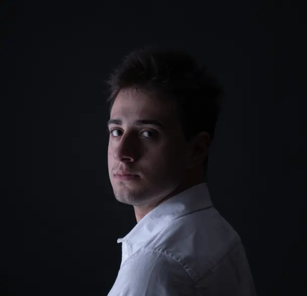
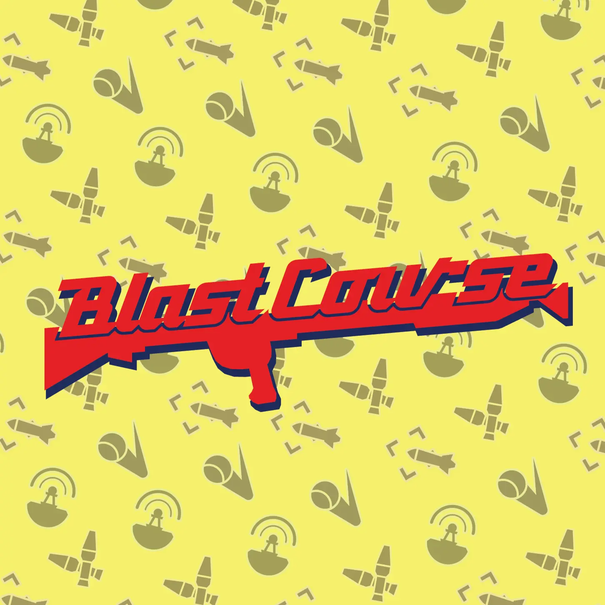
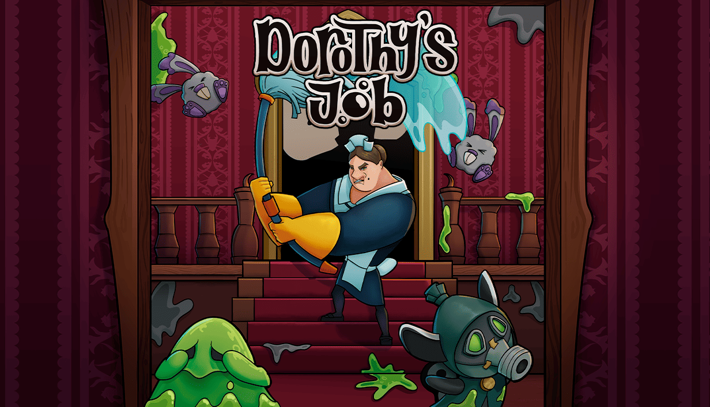
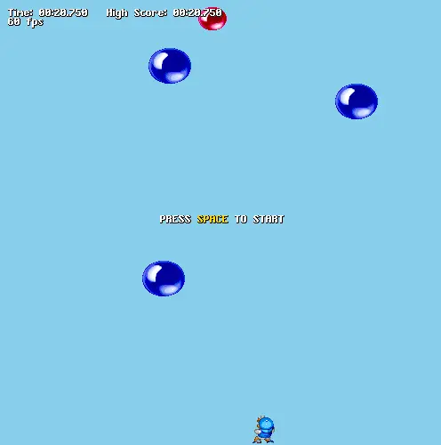
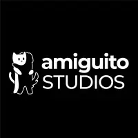
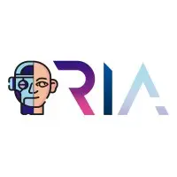
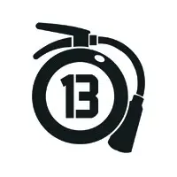

JAIME PÁRAMO
Programmer
Hello, World!
I am a Game Programmer based in Madrid specializing in gameplay systems, UI architecture, and audio integration. With a background in both game design and C++ engineering, I build modular systems in Unreal Engine 5 that give designers accessible, reliable tools to iterate on gameplay without friction.
Alongside studio production across multiple UE5 projects, I spent three years teaching Unreal Engine 5 at U-tad’s Summer School and over a decade studying music theory and piano, a background that drives my focus on tactile UI and responsive FMOD audio pipelines.
Download Resume
Core Specialties
Gameplay Systems
Building modular C++ components, custom character mechanics, and designer-friendly tools in Unreal Engine 5 to turn design concepts into responsive gameplay.
UI & Audio Integration
Developing input-aware UMG navigation frameworks and centralized FMOD audio pipelines that connect system state directly to player feedback.
Technical Education
Breaking down C++, Blueprints, and core programming concepts into hands-on projects for young students through structured, beginner-friendly courses.
Tech Stack
Game Engines
- Unreal Engine 5+ Yrs
- Unity 4+ Yrs
- Godot 6+ Mos
- Scratch 6+ Mos
Languages
- C++ 2+ Yrs
- C# 3+ Yrs
- Python 1+ Yr
- Lua 1+ Yr
- GDScript 6+ Mos
- Verse 3+ Mos
Tools
- FMOD 3+ Yrs
- Git 3+ Yrs
- Notion 3+ Yrs
- LaTeX 2+ Yrs
Web Dev
- HTML 2+ Yrs
- CSS 2+ Yrs
- JavaScript 2+ Yrs
* Experience metrics reflect total time actively building with the technology, encompassing professional roles, academic research, and personal projects.
Featured Work
All Projects
Current Studio ProjectBlast Course 2
The explosive sequel to Blast Course. A first-person puzzle-platformer centered around the high-speed art of Rocket Jumping.

Dorothy's Job
An isometric twin-stick shooter where players clean up enemy-filled levels using weaponized mops and vacuums.

Burntbite Engine
A lightweight Entity Component System (ECS) game engine built entirely from scratch in C++.
Professional Experience
Game Programmer

Amiguito Studios
Contributing to core gameplay programming and system development for the sequel to Blast Course.
Game Programming Support
Black Hat Studios
Supported the programming team on Unstrung, architecting a volume-based level streaming system with an in-editor load-time calculator, a checkpoint system, supporting UI, and runtime debugging tools.
Robotics & Programming Teacher

Robots In Action
Taught robotics and programming fundamentals to primary school students through interactive, game-based learning projects.
UI, Audio & Gameplay Programmer

Bola 13 Studios
Worked on Dorothy’s Job, an isometric twin-stick shooter built in Unreal Engine 5 and released on Steam. Collaborated in a 30+ person multidisciplinary team to build custom C++ UMG focus navigation, centralized FMOD audio systems, and modular gameplay mechanics.
Unreal Engine 5 Game Development Teacher
U-tad
Designed and delivered 20-hour introductory courses for groups of ~25 secondary school students across three summers, covering game design basics, Unreal Engine 5, Blueprints, C++, and introductory design patterns.
Research Assistant
U-tad
Contributed to ARTEMIS, a multidisciplinary research project exploring rhythmic experiences for emotional well-being. Collaborated with psychologists and musicians to translate rhythm-based research into a playable Unity (C#) prototype.
Ready to review my code?
Explore my full portfolio for technical breakdowns and code implementations, or get in touch directly.